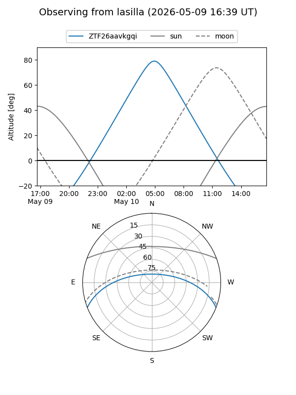
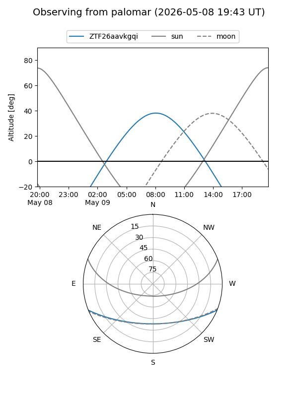

ZTF26aavkgqi
Target ZTF26aavkgqi at 2026-05-09 10:00
Aliases and brokers:
FINK: link
Lasair: link
ALeRCE: link
alt names
ZTF26aavkgqi (ztf,fink_ztf)
Coordinates:
equatorial (ra, dec) = 230.7474,-18.33917
equatorial (HMS+DMS) = 15:22:59.39,-18:20:21.00
galactic (l, b) = (346.0922,+31.55017)
Flags:
Photometry:
last ztfg=18.78
1 ztfg detections
Lightcurve
Visibility


Additional plots